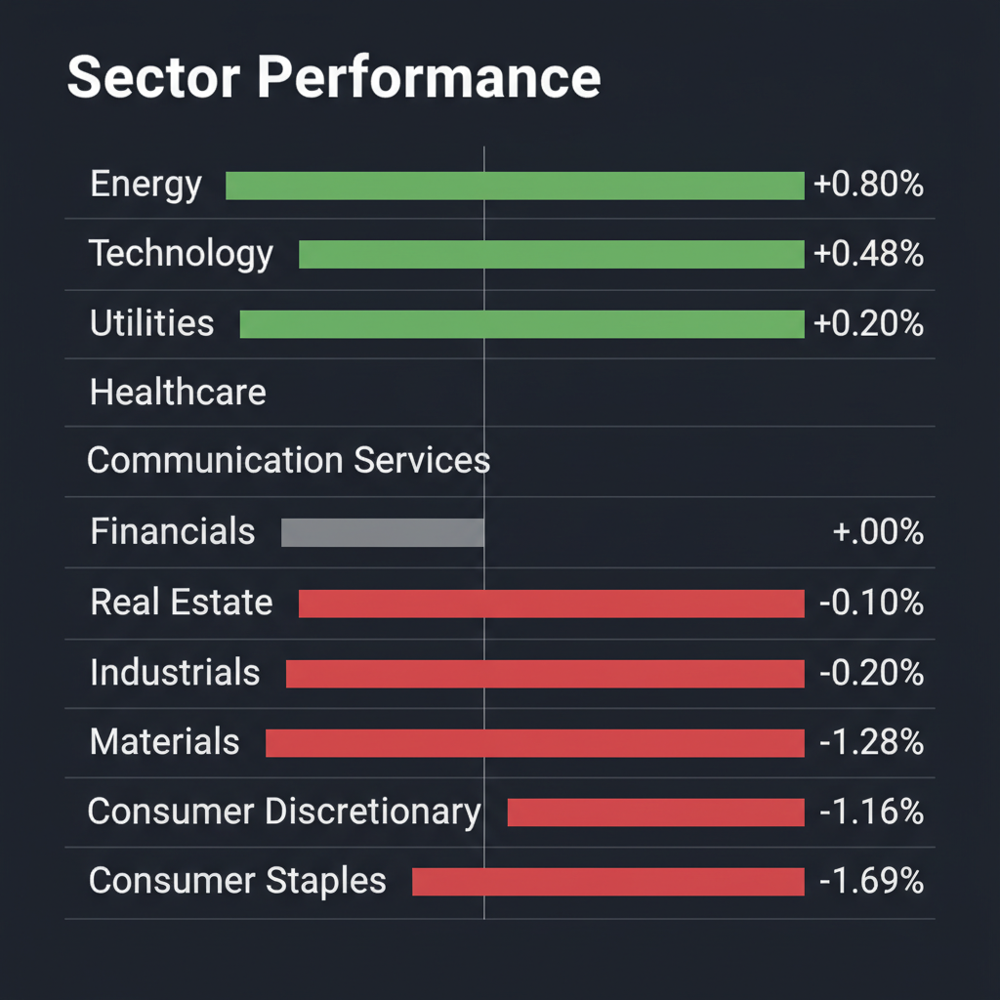
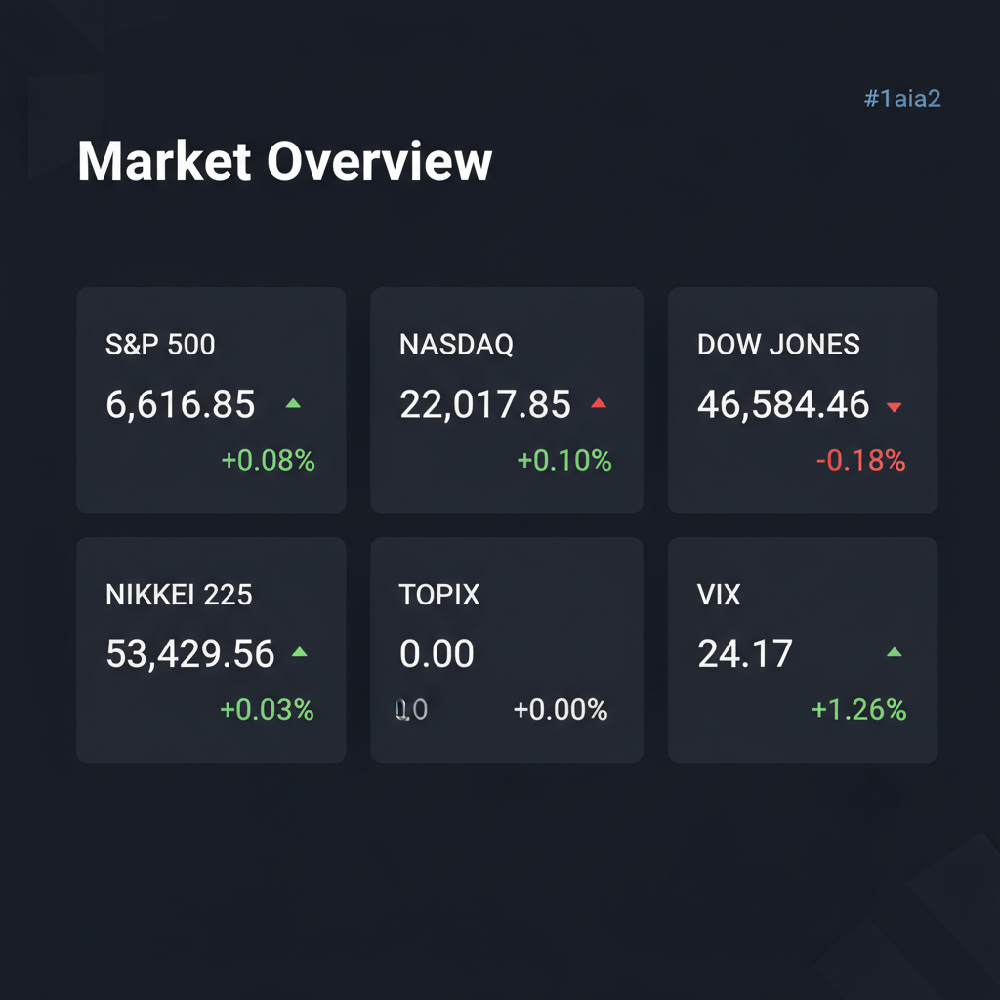

Daily Investment Report - 2026-04-08
Generated: 2026/4/8 8:20:48


投資チームミーティングの分析を踏まえ、投資家向けの最終レポートをまとめました。
1. エグゼクティブサマリー
- 現在の市場の急反発（日経先物の急騰など）は地政学リスクの一時的な猶予による「ショートカバー（買い戻し）」に過ぎず、VIXの高止まりや短期信用市場のストレスが示す通り、暴落の罠（ブルトラップ）である可能性が高い警戒局面です。
- インフレと消費減速が併発する「スタグフレーション」の兆候が表れており、ブランド力に依存する大型消費財や有利子負債の多い企業は直ちに売却・回避の対象となります。
- 投資家はキャッシュ比率と金（ゴールド）へのヘッジを高めつつ、下値不安が少なく強固なキャッシュフローを生み出す「日本の中小型バリュー・ESG関連株」への厳格な選別投資にシフトすべきです。
2. 注目銘柄リスト
強気（買い推奨）
- トランザクション（7818） [時価総額: 約600億円]: ESG関連グッズ（エコバッグ等）でニッチトップにあり、営業利益率15%以上と極めて高いキャッシュ創出力を持つため、信用収縮時にも下値が堅い優良な中小型銘柄です。
- パルグループHD（2726） [時価総額: 約1,000億円]: 厳しいアパレル環境下でもEC比率の向上で販管費を巧みにコントロールしており、好決算を出せる実力と割安さを兼ね備えています。
- Levi Strauss（LEVI） [時価総額: 約80億ドル]: 消費者の冷え込みが懸念される中でもトップライン・ボトムライン共に市場予想を上回り、関税撤回という強力な追い風がまだガイダンスに織り込まれていないため、明確な上振れ余地があります。
中立（様子見）
- メタリアル（6182） [時価総額: 約100億円]: 既存のAI翻訳から生成AI・メタバースへの事業転換（ピボット）は将来のテンバガー候補として魅力的ですが、期待先行による高バリュエーションと短期信用市場の悪化リスクを考慮し、業績（利益）の裏付けが確認できるまでは様子見とします。
- 日本の極小不動産・倉庫関連銘柄 [時価総額: 50億円以下]: 外資系ファンド（KKR等）の標的となる「PBR1倍割れかつ実質無借金」の企業にはプレミアムがつく可能性がありますが、不動産セクター全体としては金利動向に弱いため、個別銘柄の財務分析（BS確認）が必須です。
弱気（警戒）
- NIKE（NKE） [時価総額: 約1,400億ドル]: 好決算を発表したにもかかわらず株価が大陰線を伴って急落しており、消費者の購買力低下や今後のフリーキャッシュフロー悪化を市場が織り込み始めた「落ちるナイフ（バリュートラップ）」の典型例です。
3. セクター推奨ランキング
- 1位：エネルギー・コモディティ（金など）：中東の地政学リスク・ホルムズ海峡の不確実性に対する最強のヘッジ先であり、インフレ再燃時にもポートフォリオを守る防衛力があります。
- 2位：日本の中小型バリュー・ESG関連：外資系アクティビストの参入による資本効率の改善期待があり、マクロ経済のノイズに関わらず企業独自の成長とキャッシュ創出力で株価が下支えされます。
- 3位：AI・特化型テクノロジー：全体の景気動向に左右されない独自の構造的成長サイクルにあり、大企業がカバーしきれない特化型インフラを持つ小型テックは将来的なM&Aの標的として有望です。
- 4位：金融：金利高止まりの恩恵を受ける反面、米国の短期信用市場におけるストレスが直撃するリスクも抱えているため、中立的なウェイトを推奨します。
- 5位（最下位）：一般消費財・生活必需品：原材料高騰（インフレ）と購買力低下（弱い消費者）の板挟みによるマージン・スクイーズ（利益率の悪化）が明確であり、当面は徹底したアンダーウェイト（回避）を推奨します。
4. 今週の注目イベント
- 4月8日：イラン攻撃の「猶予」期限（日本時間午前9時）後の市場の反応と、中東情勢のヘッドライン監視
- 4月8日：日本の内需・消費動向を占う企業（ABCマート、イオンFS、サイゼリヤなど計13社）の決算発表
- 随時：ホルムズ海峡の海運保護に関する国連決議（中国・ロシアの拒否権発動後）の動向および原油価格の推移
- 随時：米国短期信用市場（ショートターム・クレジット市場）のストレステスト兆候および流動性指標の確認
5. リスク要因
- 短期信用市場のストレスと流動性の枯渇：金利高止まりにより、米国の短期資金調達市場で初期のストレスが観測されています。これが悪化すれば、有利子負債の多い企業や赤字の成長株が即座に資金繰りに窮するクレジット・クランチに発展します。
- 地政学リスクのエスカレーションによる複合ショック：猶予期限後に本格的な軍事衝突が勃発しホルムズ海峡が封鎖された場合、原油価格が暴騰（1バレル200ドル懸念）し、FRBが利下げできない「極端なスタグフレーション」へと陥るシナリオです。
- ブルトラップ（買いのダマシ）によるフラッシュ・クラッシュ：現在の日経平均の歴史的急騰は空売りの買い戻しに過ぎず、VIXが警戒水準（24超）にあることは、スマートマネーがすでに暴落へのヘッジ（プット買い）を構築していることを示唆しています。
6. アクションアイテム
- 株式ポジションの縮小と現金比率の最大化：直近の相場急騰を「絶好の利益確定の場」と捉え、ポートフォリオ全体の株式エクスポージャーを通常時の半分以下に縮小してキャッシュを確保してください。
- 金（ゴールド）およびエネルギーセクターへのヘッジ構築：地政学ショックとインフレの双方向に備え、金現物・金鉱株やエネルギーETF（XLE等）をオーバーウェイトしてください。
- 脆弱な銘柄の売却・ショート（空売り）検討：流動比率の低い企業、有利子負債の多い企業、および消費減速の直撃を受けるアパレル・小売りセクターをポートフォリオから完全に排除してください。
- 新規買いは「厳格な逆指値付きの中小型株」のみに限定：トランザクションなどの財務健全な銘柄にエントリーする場合でも、日中のボラティリティ拡大によるトラップを避けるため、直近安値の少し下に必ずストップロス（逆指値）を設定してください。